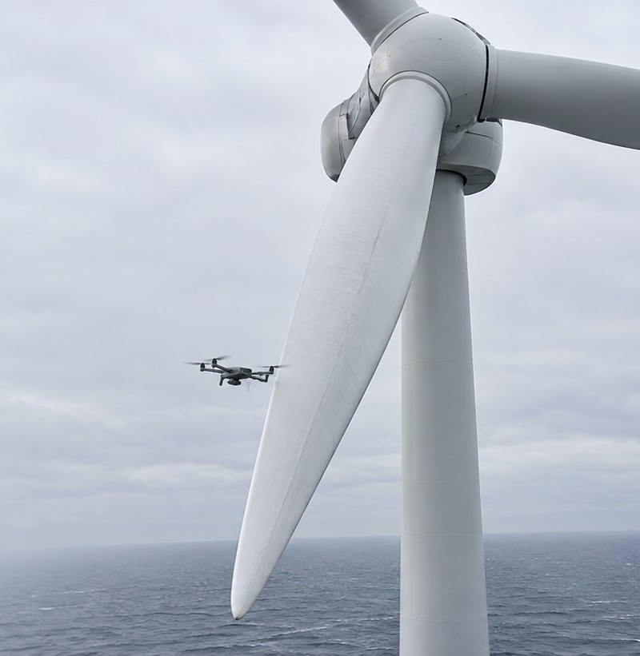
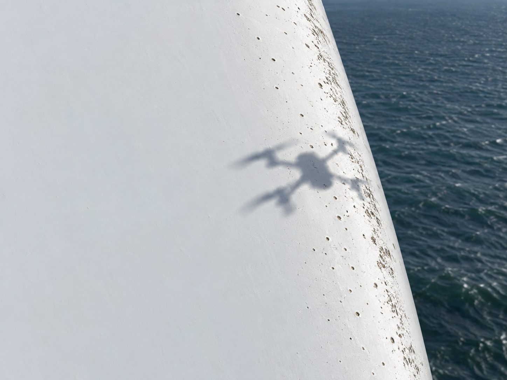
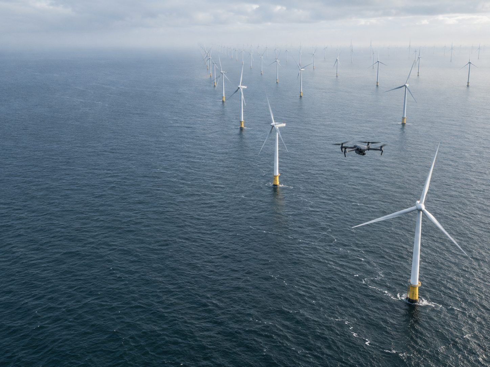

K-1 · blade inspection
Three numbers to plan around. The rest of the page shows how K-1 gets them.
- Flight time, per blade
- 11min
- Root to tip with no pilot on the sticks. K-1 flies the blade by itself.
- Smallest defect reported
- 0.2mm
- Erosion and pitting on the leading edge, found while they are still small.
- Report delivered
- Same day
- The blade is flown and the report is filed on the same day.
Flown, found, filed. One blade, start to finish.
- 01 Fly the blade K-1 flies the full length of the blade on its own, root to tip, in eleven minutes.
- 02 Find the defects Every defect from 0.2 mm up is boxed, labelled and placed on the blade.
- 03 File the report The report is filed the same day, ready for the repair plan.


Blade inspection report
Sample layout
| ID | Photo | Type | Where | Size |
|---|---|---|---|---|
| D-01 | Erosion | Leading edge | — mm | |
| D-02 | Erosion | Leading edge | — mm | |
| D-03 | Pitting | Leading edge | — mm | |
| D-04 | Pitting | Leading edge | — mm |
Smallest reportable defect 0.2 mm. Sizes are placeholders in this sample.

Blade hours
Your farm, in flight time.
33 minof blade flight for 3 blades
Blade time only, at eleven minutes a blade. Transit between turbines, launches and weather are not counted.
Book a fleet trialBook a fleet trial. Tell us which turbines to fly first.
- You get
- A report for every blade flown, on the day it is flown.
- Down to
- Defects from 0.2 mm, each boxed and labelled.
- Per blade
- Eleven minutes of flight.